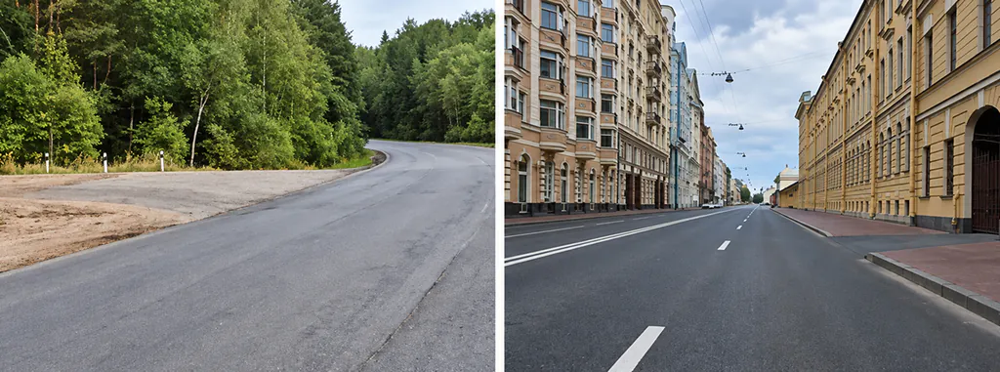

Перекрёсток или выезд со двора: как отличить в билете ПДД

Выезд из двора или с другой прилегающей территории не считается перекрёстком. Поэтому нельзя назначить выезжающему преимущество только потому, что он находится справа. При выезде на дорогу действует пункт 8.3, а сначала нужно правильно определить сам объект.
Отличие влияет и на решение о приоритете, и на действие некоторых дорожных знаков. Ниже три вопроса A/B: определение, сравнение рисунков и обязанность уступить. Иллюстрации сохранены из базы приложения; это учебные примеры, а не универсальный способ определять любую спорную дорогу по фотографии.
Определение важнее ширины въезда
В пункте 1.2 перекрёсток связан с пересечением, примыканием или разветвлением дорог на одном уровне. Прилегающая территория непосредственно прилегает к дороге и не предназначена для сквозного движения транспортных средств. В качестве примеров названы дворы, жилые массивы, автостоянки, АЗС и предприятия.
Из этого не следует, что любая узкая дорога — двор, а широкий асфальтированный проезд — обязательно перекрёсток. Оценивайте назначение и обстановку. В реальном спорном месте одной картинки может быть недостаточно; билет задаёт конкретную учебную ситуацию, которую нужно читать целиком.
Задача 1. Как называется выезд из двора
A/B, билет 26, вопрос 1. Выезд из двора или с другой прилегающей территории:
- Считается перекрёстком равнозначных дорог
- Считается перекрёстком неравнозначных дорог
- Не считается перекрёстком
Проверить ответ
Верно: Не считается перекрёстком.
На рисунке выезд через ворота дворовой территории. Правильный вариант прямо соответствует определению: он не считается перекрёстком. Поэтому варианты «равнозначных» и «неравнозначных дорог» здесь не подходят ещё до обсуждения очерёдности проезда.
Это полезная первая развилка. Если сразу искать машину справа, можно начать применять правило, рассчитанное на другую ситуацию. Сначала ответьте, что именно изображено, и только затем определяйте обязанность уступить.
Задача 2. Грунтовое примыкание и городской двор

A/B, билет 30, вопрос 1. На каком рисунке изображён перекрёсток?
- Только на левом
- Только на правом
- На обоих
Проверить ответ
Верно: Только на левом.
Слева показано примыкание дороги, справа — выезд с прилегающей территории. Верный ответ базы — «Только на левом». Асфальт и городской фон справа не превращают двор в перекрёсток, а грунтовое покрытие слева не лишает примыкание статуса пересечения дорог.
Слова «перекрёсток» и «равнозначный» тоже не являются синонимами. На левом рисунке дороги неравнозначные: различие покрытия участвует в определении главной дороги. Но вопрос здесь просит установить именно наличие перекрёстка, а не всю последовательность проезда воображаемых участников.
При повторении закройте варианты и опишите каждую половину одной фразой. Не запоминайте «левый правильный»: в другой задаче расположение рисунков и содержание вопроса могут быть иными. Ищите основание, а не место ответа на экране.
Задача 3. Кому уступают при выезде
A/B, билет 32, вопрос 8. Выезжая с прилегающей территории, необходимо уступить дорогу:
- Только маршрутным транспортным средствам
- Всем механическим транспортным средствам
- Транспортным средствам, лицам, использующим для передвижения средства индивидуальной мобильности и пешеходам
Проверить ответ
Верно: Транспортным средствам, лицам, использующим для передвижения средства индивидуальной мобильности и пешеходам.
Пункт 8.3 требует при выезде на дорогу с прилегающей территории уступить транспортным средствам, лицам, использующим СИМ, и пешеходам, движущимся по ней. Поэтому ответ «только маршрутным» слишком узок. Вариант «всем механическим транспортным средствам» тоже не охватывает полный круг участников.
Велосипед — транспортное средство; его нельзя мысленно исключить только потому, что в правильном варианте он не перечислен отдельным словом. И не ограничивайте проверку одним направлением: обязанность связана с движением участников по дороге, а не с тем, кто находится у вас справа.
Въезд во двор и выезд из него: разные формулировки
| Ваше действие | Что проверяет пункт 8.3 | Дополнительное внимание |
|---|---|---|
| Выезжаете на дорогу | Уступить ТС, пользователям СИМ и пешеходам, движущимся по ней | Не применять вместо этого только «помеху справа» |
| Съезжаете с дороги на прилегающую территорию | Уступить пешеходам, велосипедистам и пользователям СИМ, чей путь пересекаете | Другие обязанности при манёвре продолжают действовать |
Вторая строка не означает, что при повороте налево во двор можно игнорировать встречный транспорт: требования к манёвру рассматриваются совместно. Таблица выделяет две формулировки одного пункта, а не перечисляет все возможные обязанности водителя.
Почему после двора ограничение может продолжаться
У некоторых запрещающих знаков зона связана с ближайшим перекрёстком. Но в описании их действия прямо указано, что выезд с прилегающей территории не прерывает соответствующую зону. Например, после проезда дворового выезда нельзя автоматически считать отменённым ранее установленное ограничение максимальной скорости.
Проверяйте конкретный знак, табличку и правила его зоны. Не выводите из этого обратное обобщение «никакой знак нигде не заканчивается»: в задаче может быть знак конца ограничения, иной установленный предел или другое предусмотренное условие.
Упражнение на следующий билет
Составьте короткую запись: объект — моя траектория — кому уступаю — норма. Если объект является прилегающей территорией, назовите признаки из условия. Если перекрёстком — отдельно определите регулируемость и положение дорог. Это помогает не переносить знакомую очерёдность на другую геометрию.
Для следующего шага используйте общую карту проезда перекрёстков и правила маневрирования. Здесь главное различие уже найдено: похожее пересечение на рисунке ещё не означает одинаковый правовой статус.
Источники и проверка
В новом билете сначала отличите перекрёсток от прилегающей территории, затем объясните обязанность уступить.
Частые вопросы
Выезд со двора — равнозначный перекрёсток?
Нет. Пункт 1.2 исключает выезды с прилегающих территорий из понятия перекрёстка. При выезде на дорогу применяется пункт 8.3.
Грунтовая дорога не считается дорогой на перекрёстке?
Считается. В приведённом вопросе 30–1 слева изображён именно перекрёсток. Покрытие может влиять на приоритет, но само по себе не отменяет статус дороги.
При выезде из двора уступают только автомобилям?
Нет. Нужно учитывать транспортные средства, пользователей СИМ и пешеходов, движущихся по дороге. К транспортным средствам относятся и велосипеды.
Дворовой выезд отменяет знак ограничения скорости?
Сам по себе выезд с прилегающей территории не прерывает зону действия знака 3.24. Нужно проверить конкретные условия окончания ограничения.